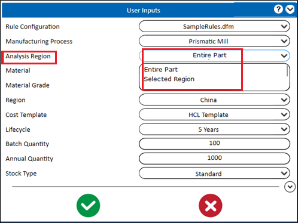
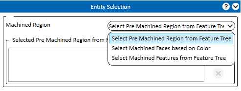
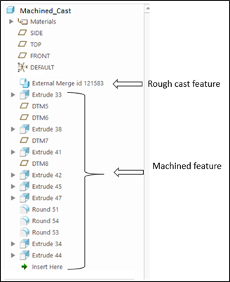
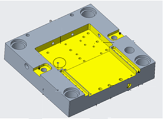

選択した領域 オプションを選択し、 Analyze ボタンをクリックします。
Analyze ボタンをクリックします。
Prismatic Mill "フライス加工"の製造プロセスでは、DFMPro は パーツ全体 または 選択した領域 に対して解析を実行することができます。

解析領域では、ドロップダウンメニューから パーツ全体 または 選択した領域 を選択して解析を実行できます。
選択した領域 オプションを選択し、 Analyze ボタンをクリックします。
加工領域用のエンティティ選択グループボックスでは、DFMPro はドロップダウンリストから選択できる 3 つのオプションを提供します。

DFMPro では、モデルツリーから前加工領域（最後のラフ加工フィーチャー）を選択できます。前回のラフ加工フィーチャー以降に追加されたフィーチャーは、加工フィーチャーとして扱われます。
この選択に基づいて、DFMPro のルール実行は加工フィーチャーに対して行われます。

色分けされた加工フィーチャーが CAD ファイルに追加されている場合、ユーザー（設計者）は組織の標準に基づいて CAD パーツから色付きの面を選択できます。DFMPro は、選択された色に関連付けられたフィーチャーを自動的に識別し、DFMPro 解析用に検証します。

図のとおり、すべての黄色は加工面であり、加工用に関連付けられた加工フィーチャーの一覧が表示されます。
ユーザーはモデルツリーから加工フィーチャーを選択でき、これらのフィーチャーは DFMPro 解析用に検証されます。
注記:
PMI ベースのルールを除き、すべてのPrismatic Mill "フライス加工" ルールおよび以下に示すGeneral "基本設計" ルールがサポートされています。